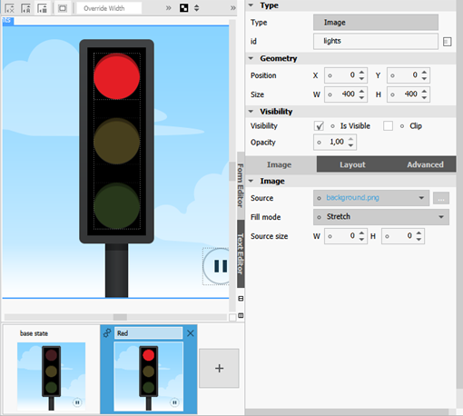
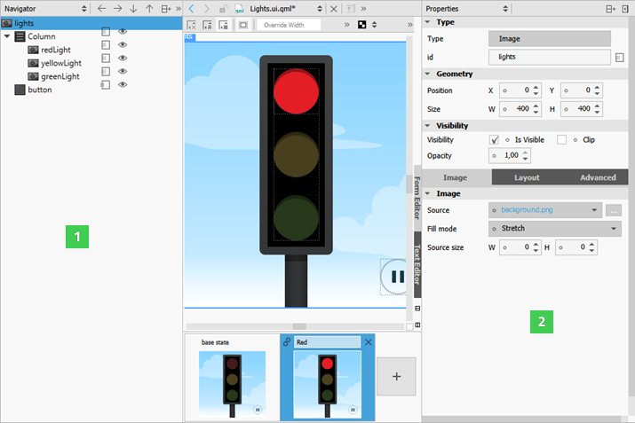

Adding States
User interfaces are designed to present different interface configurations in different scenarios, or to modify their appearances in response to user interaction. Often, there are a set of changes that are made concurrently, such that the interface could be seen to be internally changing from one state to another.
This applies generally to interfaces regardless of their complexity. A photo viewer may initially present images in a grid, and when an image is clicked, change to a detailed state where the individual image is expanded and the interface is changed to present new options for image editing. At the other end of the scale, when a button is pressed, it may change to a pressed state in which its color and position are modified so that it appears to be pressed down.
In QML, any item can change between different states to apply sets of changes that modify the properties of relevant items. Each state can present a different configuration that can, for example:
- Show some UI items and hide others.
- Present different available actions to the user.
- Start, stop or pause animations.
- Execute some script required in the new state.
- Change a property value for a particular item.
- Show a different view.
The States pane displays the different states of the component in the Design mode. The States pane is collapsed by default to save space. Select Expand in the context menu to view the whole pane.

To add states, click the  button. Then modify the new state in the editor. For example, to change the appearance of a button, you can hide the button image and show another image in its place. Or, to add movement to the view, you can change the position of an object on the canvas and then add animation to the change between the states.
button. Then modify the new state in the editor. For example, to change the appearance of a button, you can hide the button image and show another image in its place. Or, to add movement to the view, you can change the position of an object on the canvas and then add animation to the change between the states.
To determine when the state should be applied, select Set when Condition in the menu and specify a when property for the state.
You can preview the states in the States pane and click them to switch between states on the canvas.
Using States
QML states typically describe user interface configurations, such as the UI controls, their properties and behavior and the available actions. For example, you can use states to create two views.
To add states, click the empty slot in the States pane. Then modify the new state in the Form Editor or the Properties pane.

The properties that you change in a state are highlighted with blue color. In the Text Editor, you can see the changes recorded as changes to the base state.
To keep the QML code clean, you should create a base state that contains all the types you will need in the application. You can then create states, in which you hide and show a set of items and modify their properties. This allows you to:
- Align items on different views with each other.
- Avoid excessive property changes. If an item is invisible in the base state, you must define all changes to its child types as property changes, which leads to complicated QML code.
- Minimize the differences between the base state and the other states to keep the QML code short and readable and to improve performance.
- Avoid problems when using transitions and animation when changing states.
To create views for an application by using states:
- In the base state, add all items you will need in the application (1). While you work on one view, you can click the
 icon to hide items on the canvas that are not part of a view.
icon to hide items on the canvas that are not part of a view. - In the States pane, click the empty slot to create a new state and give it a name. For example,
Normal. - In the Properties pane (2), deselect the Visibility check box or set Opacity to 0 for each item that is not needed in this view. If you specify the setting for the parent item, all child items inherit it and are also hidden.

- Create additional states for each view and set the visibility or opacity of the items in the view.
- To determine which view opens when the application starts, use the Text Editor to set the state of the root item of the .qml file, as specified by the following code snippet:
Item { state: "Normal" }
Using SCXML State Machines
To use QML together with an SCXML state machine, add states and bind them to the state machine in the Backends tab in the Design mode, as described in Managing C++ Backend Objects.
In the States pane, you can edit the when condition of states to map QML states to the states of the SCXML state machine. For an example, see Qt SCXML Traffic Light QML Example (Dynamic).

If you add animation to the states, you can run the application to test the animation.
Animating Transitions Between States
To make movement between states smooth, you can specify transitions. You can use different types of animated transitions. For example, you can animate changes to property values and colors. You can use rotation animation to control the direction of rotation. For more information, see Animation and Transitions in Qt Quick.
You can use the ParallelAnimation type to start several animations at the same time. Or use the SequentialAnimation type to run them one after another.
You can use the Text Editor to specify transitions. For more information, see Transition.
Alternatively, you can use the Timeline view to animate the properties of UI components and to bind the animations to states. For more information, see Binding Animations to States.